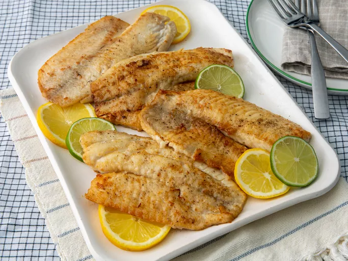

Tilapia Recipe

Pan-Seared Tilapia Recipe
Learn how to cook tilapia with this easy, 15-minute recipe for pan-seared tilapia that's delicious and full of flavor.
This simple method of cooking fish fillets is great for a weeknight meal. Serve with fresh veggies.
Ingridients:
- 4 (4 ounce) tilapia fillets
- salt and ground black pepper to taste
- 1/2 cup all-purpose flour
- 1 tablespoon olive oil
- 1 tablespoon olive oil
- 2 tablespoons unsalted butter, melted
Steps:
- Gather the ingredients
- Season both sides of each fillet with salt and pepper
- Gently press each fillet into the flour to coat
- Cook tilapia fillets in the hot oil, until fish flakes easily with a fork
- Brush melted butter onto the tilapia fillets in the last minute before removing from the skillet